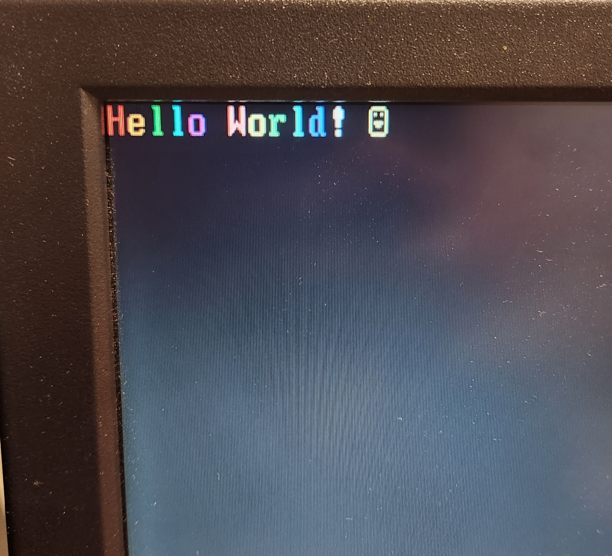
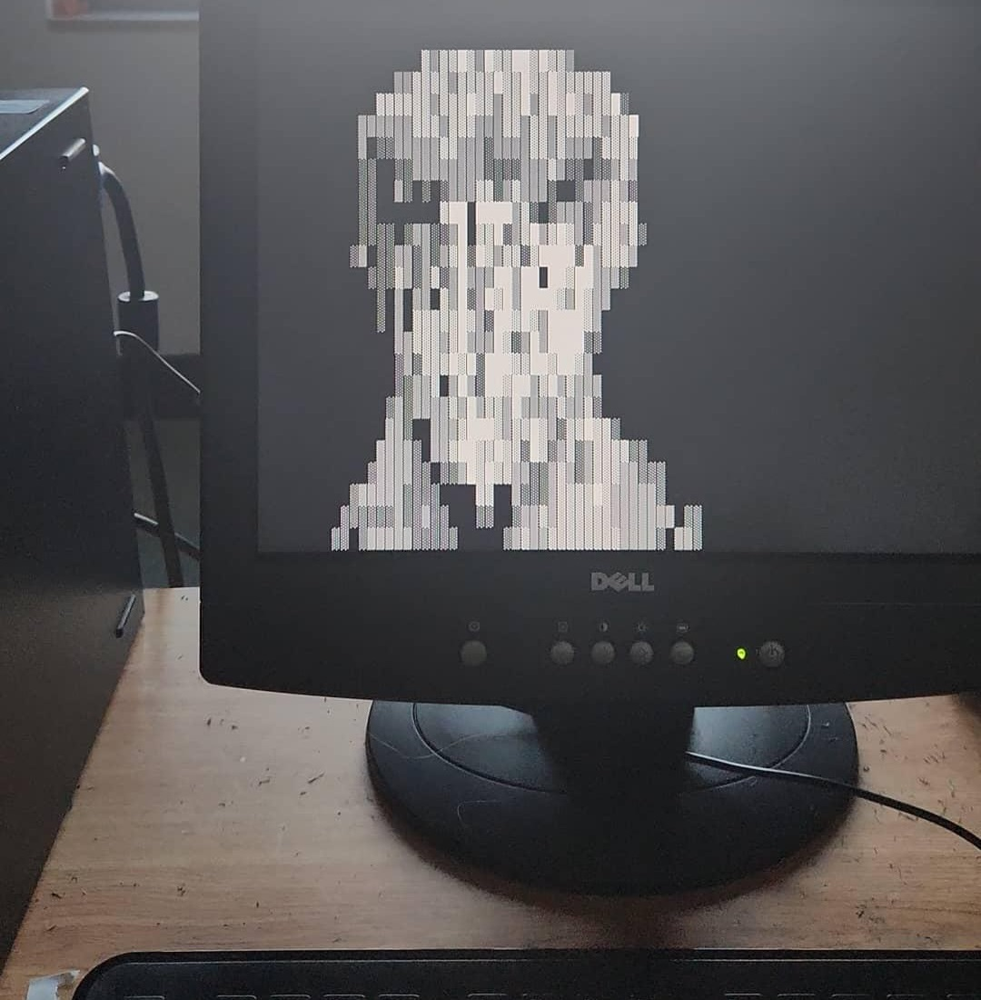

Low Level Development - Personal Study
March 2024 - Present
Intel x86, C
I started a low level development project in my spare time to
learn more about how computers function. Using Intel's x86 software
development manual (SDM) as a reference, the project began with writing
16-bit real mode programs directly in the MBR partition on a hard drive.
Initial programs involved writing text to the screen from keyboard input
and coloring the pixels in VGA graphics mode. They were written in assembly and compiled to machine code using the SDM as a reference.
I then created a simple "bootloader" program that loads
larger files from the rest of the drive into memory and runs them.
Future plans for the project involve creating a proper bootloader
that also switches the CPU into protected mode and transfers control to an operating system.
I also intend to develop a simple operating system for the sake of better understanding scheduling, drivers,
memory paging, file organization, etc.
The project's Github repository is availible here.

(Hello World 16-bit MBR program)

(7.3 KB ASCII art program loaded into memory from bootloader)
Return to Projects